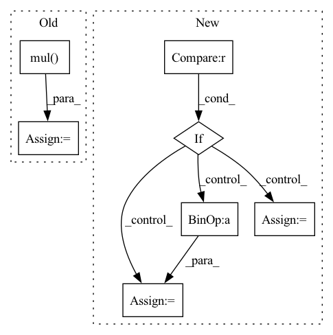

Pattern ID :14166
Before Change
def abs_loss(self, _input: torch.Tensor, atanh_mark: torch.Tensor, atanh_mask: torch.Tensor,
layer: str, neuron: int, next_neuron: int):
mark = atanh_mark.tanh().mul( 0.5) .add(0.5)
mask = atanh_mask.tanh().mul(0.5).add(0.5) * self.nc_mask
X = _input + mask * (mark - _input)After Change
if use_mask:
mask_loss = mask.sum()
mask_nz = len(mask.nonzero())
if (self.count_mask and mask_nz > (math.sqrt(self.max_troj_size) + 2)**2 ) \
or (not self.count_mask and mask_loss > 100):
mask_loss *= 2 * self.remask_weight
elif (self.count_mask and mask_nz > self.max_troj_size) \
or (not self.count_mask and mask_loss > self.max_troj_size):
mask_loss *= self.remask_weight
else:
mask_loss = 0.0
loss = -vloss1 + 1e-4 * vloss2 + mask_lossIn pattern: SUPERPATTERN
Frequency: 3
Non-data size: 7
Instances Fragment ID: 47221648
Project Name: ain-soph/trojanzoo
Commit Name: 1684c28ef38502abb83d37beb845b69007e33274
Time: 2020-07-07
Author: ain-soph@live.com
File Name: trojanzoo/defense/backdoor/abs.py
M Class Name: ABS
N Class Name: ABS
M Method Name: abs_loss(7)
N Method Name: abs_loss(7)
M Parent Class: Defense_Backdoor
N Parent Class: Defense_Backdoor
M File Name: trojanzoo/defense/backdoor/abs.py
N File Name: trojanzoo/defense/backdoor/abs.py
M Start Line: 231
M End Line: 252
N Start Line: 260
N End Line: 283
Before Change
// [batch_size, max_item_length, num_float_field, embed_dim]
float_embedding = self.float_embedding_table[type](index)
float_embedding = torch.mul( float_embedding, float_fields.unsqueeze(-1))
return float_embedding
def embed_token_fields(self, token_fields, type):After Change
if float_fields is None:
return None
if type == "item" :
embedding_shape = float_fields.shape[:-1] + (-1,)
float_fields = float_fields.reshape(-1, float_fields.shape[-2], float_fields.shape[-1])
float_embedding = self.float_embedding_table[type](float_fields)
float_embedding = float_embedding.view(embedding_shape)
else:
float_embedding = self.float_embedding_table[type](float_fields)
return float_embedding
Fragment ID: 47221650
Project Name: rucaibox/recbole
Commit Name: 3ea75a6e4e9102223ea8fb80f9880b2bb423fbf1
Time: 2022-07-16
Author: 1204216974@qq.com
File Name: recbole/model/layers.py
M Class Name: ContextSeqEmbAbstractLayer
N Class Name: ContextSeqEmbAbstractLayer
M Method Name: embed_float_fields(4)
N Method Name: embed_float_fields(4)
M Parent Class: nn.Module
N Parent Class: nn.Module
M File Name: recbole/model/layers.py
N File Name: recbole/model/layers.py
M Start Line: 917
M End Line: 932
N Start Line: 955
N End Line: 966
Before Change
if self.sim_func == "cosine":
y = torch.cosine_similarity(user_embedding, item_embedding, dim=1)
elif self.sim_func == "dot":
y = torch.mul( user_embedding, item_embedding) .sum(dim=1)
else:
raise ValueError("similarity function only support %s, but got %s" % (["cosine", "dot"], self.sim_func))
After Change
sample_weight = self.embedding(x, self.sample_weight_feature, squeeze_dim=True).squeeze(1) // (batch_size)
scores = pred - torch.log(sample_weight) //Sampling Bias Corrected, using broadcast
if user_embedding.shape[0] * (self.n_neg + 1) != self.index0.shape[0] : // last batch
batch_size = user_embedding.shape[0]
index0 = self.index0[:batch_size * (self.n_neg + 1)]
index1 = self.index1[:batch_size * (self.n_neg + 1)]
index0[np.where(index0 >= batch_size)] -= batch_size
index1[np.where(index1 >= batch_size)] -= batch_size
scores = scores[index0, index1]
else:
scores = scores[self.index0, self.index1]
Fragment ID: 47221653
Project Name: datawhalechina/torch-rechub
Commit Name: d0461152ddffad7a6bf7c7532b7b540094623e95
Time: 2022-06-07
Author: icewwl@163.com
File Name: torch_rechub/models/matching/youtube_sbc.py
M Class Name: YoutubeSBC
N Class Name: YoutubeSBC
M Method Name: forward(2)
N Method Name: forward(2)
M Parent Class: torch.nn.Module
N Parent Class: torch.nn.Module
M File Name: torch_rechub/models/matching/youtube_sbc.py
N File Name: torch_rechub/models/matching/youtube_sbc.py
M Start Line: 55
M End Line: 80
N Start Line: 60
N End Line: 87